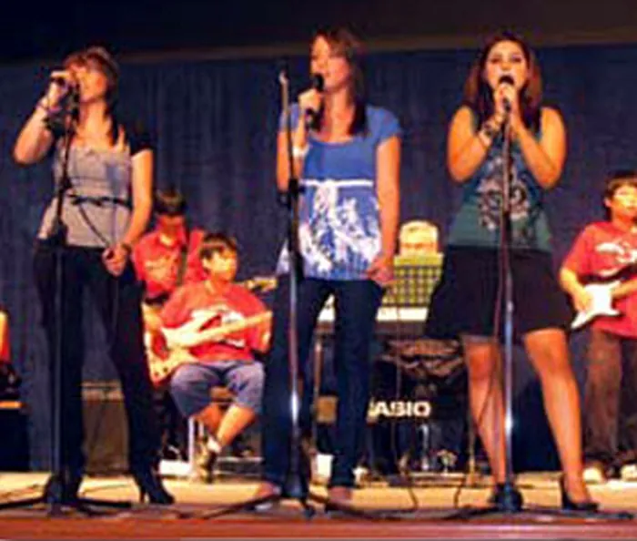

The English School Fahaheel

Reception
Age 4. Kindergarten and Reception, the UK Foundation Stage.

Middle School
Years 3 to 6. Literacy, Numeracy and Science first.

Upper School
From age 11, by entrance exam and interview.

IGCSE & A Level
Cambridge International and Edexcel, marked in the UK.

Year 13
Age 18. The Sixth Form Centre, then university.
A British school in Mangaf, South Kuwait, founded in 1968 by a group of expatriate parents. We follow the National Curriculum for England and Wales, from Reception at age 4 to Year 13 at age 18: which meets the requirement for 12 years of continuous education.
Arabic and Islamic Studies are taught to the Ministry of Education syllabus, in separate classes for Arabs and non-Arabs. French from Year 4. The full curriculum
We insist, being parents ourselves, that our students work hard, behave well and are a credit to the school and their parents.From the philosophy of The English School Fahaheel
The school is run on traditional English school practice: high academic standards, good attitudes and firm discipline, with a clear understanding of what each student needs.
Irrespective of race, colour or language, it is the right of every child to be educated.
- 1968
- Founded under the guidance of the British Consul
- 2005
- Moved to new, purpose-built premises in Mangaf
Kuwait’s oldest English school
When we opened there was no other school in South Kuwait teaching in English, apart from a Kuwait Oil Company school in Ahmadi for its employees’ children.


Founded by a group of expatriate parents under the guidance of the British Consul, and recognised the same year by the Private Education Department of the Ministry of Education. It opens its doors to a handful of expatriate students.
A block of classrooms and an Assembly Hall are built, so places can be offered to Kuwait Oil Company children when their Ahmadi school closes.
An upper storey is added to the main building, adding many more student places.
The invasion. The occupying army uses the school as a command centre and loots the furniture and teaching materials.
After liberation, the owner, Mr. Ibrahim Shuhaiber, sets out to rebuild. British Army forces help clear mines and ammunition from the area and the beach, and the school soon regains its place among Kuwait’s leading English schools.
In January the school moves to new, purpose-built premises in Mangaf near the sea, and becomes the first school in Kuwait with wireless internet throughout.
Inspected in May by Mr. Terry McDermott, an Ofsted Additional Inspector accredited by the British Government.
The Mangaf premises


Air-conditioned throughout, with CCTV inside and out and the gates guarded through the teaching day. The owner built it that way so parents can be sure their children are safe.
- Six science laboratories with preparation rooms
- Two theatres, the Lloyd Webber and the Julie Andrews
- Large indoor swimming pool
- Multi-purpose Sports Hall and fully equipped gym
- Four music rooms, ceramics and art rooms
- Two libraries, for KS1–KS2 and for Secondary
- Four computer centres with wireless and broadband
- Two Audio-Visual Centres for Middle and Upper School
- Four Kindergarten and four Reception rooms with play areas
- School clinic with a full-time qualified nurse
- Parent/teacher room for confidential talks
- Mosque, tuck shop and cafe outside the building
After lessons
Our staff run clubs and activities during and after school hours, and places go first come, first served. ESF is a member of KFSAC and ISACK, so students compete and perform with other schools in Kuwait.


Exams taken here
Cambridge University recognises ESF as a centre to teach, assess and present students for IGCSE and A Levels. Question papers are held securely and the completed scripts go untouched to the UK for marking.
- IGCSE, Years 10 and 11
- Cambridge International. Some subjects can be sat after one year.
- AS and A Level, Years 12 and 13
- Cambridge International and Edexcel.
- Kuwaiti High School Secondary Examination
- Offered by the Secondary Department alongside IGCSE Arabic.
- IGCSE Arabic as a First Language
- Taken at school, following Cambridge International Examinations.
Shown on our accreditation list: Pearson Edexcel Approved CentreCambridge International SchoolCouncil of International SchoolsBSMEGoogle for Education
Registration for 2026–2027
Admission follows the rules of the Kuwait Ministry of Education. When there are more applications than places, we keep a waiting list.
- Early YearsA conversation and interview with the parents, the child and the Kindergarten teacher in charge.
- Primary DepartmentA written test where it applies, then an interview with the Head Teacher of Primary.
- Secondary DepartmentAn entrance examination and an interview with the student, the parents and the Head Teacher of Secondary.
Bring with the application
- Birth certificate and vaccination record
- Father’s and student’s passport with visa stamp (non-Kuwaiti)
- Civil ID for the student and father
- Last school report, translated into English if needed
- Father’s nationality certificate (Kuwaiti nationals)
- Two passport-size photographs
- School health file
On acceptance, a K.D. 200 deposit. Students joining from another school in Kuwait also need a letter of release.

Visit us
The English School Fahaheel, Mangaf, Kuwait
Near the sea in Mangaf. Post: P.O. Box 7209, Fahaheel, Postal Code 64003. Teachers are glad to meet parents at any time; please arrange it with the School Office.

The school in Mangaf, near the sea. Our premises since January 2005.